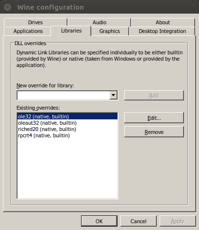
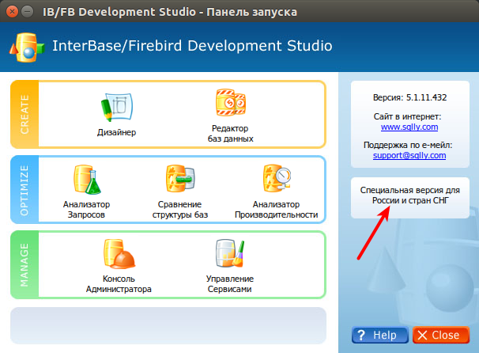

|
Nov 16, 2016
|
Firebird - это опенсорс, версионная СУБД, с регистронезависимыми названиями таблиц и полей (как у Oracle), которая хранит каждую базу в одном отдельном файле (как sqlite, но требует наличия сервера, хотя бы embeded). Из минусов можно отметить довольно скудную систему типов, индексов и по сути отсутствие возможности горизонтального масштабирования. Также многие библиотеки, ОРМ и прочее игнорируют поддержку этой СУБД, однако FireBird сильно популярен (был?) на территории СНГ, поэтому довольно часто приходится с ним работать.
Из GUI инструментов есть FlameRobin с простым интерфейсом, SQL редактором, просмотром DDL и пожалуй всё, любое редактирование таблиц запросами.
Более мощный (но не безглючный) инструмент это Firebird SQL Studio, в нем можно даже ER-модели рисовать и делать diff между двух баз.
См.также
Ссылка на скачку бесплатной версии для постсоветского пространства: http://www.sqlly.com/files/ibds_Setup_rus.exe
Итак, наша задача завести его на Linux. Естественно, как и всё что пришло из Delphi работает только под Windows, поэтому рассмотрим вариант запуска сего продукта в Wine.
Запускаем команду winecfg и устанавливаем совместимость с Windows 98 (и
это в 2016 году!):
Затем прописываем нужные dll-ки:
Теперь ВАЖНЫЙ момент, если у вас не ru_RU.cp1251 локаль. Именно по локале софт определяет, что вы из СНГ и делает его бесплатным. Поэтому, прежде чем запустить установщик нужно эту локаль добавить:
$ sudo locale-gen ru_RU.cp1251
И переконфигурировать окружение поставив напротив ru_RU.cp1251 галочку:
$ sudo dpkg-reconfigure locales
Вот теперь можно запускать установщик, а так-как у меня по умолчанию стоит
локаль en_US.UTF-8, то предварительно передав ему флаг LC_ALL:
$ LC_ALL=ru_RU.CP1251 wine ibds_Setup_rus.exe
Устанавливается в папку
~/.wine/drive_c/Program\ Files/IB-FB\ Development\ Studio/, запускается
командой:
$ LC_ALL=ru_RU.cp1251 wine \
~/.wine/drive_c/Program\ Files/IB-FB\ Development\ Studio/ControlCenter.exe
После чего вы увидите интерфейс программы на русском языке.
Но это ещё не всё, что бы программа заработала ей нужна библиотеке gds32.dll,
ее необходимо подложить в директорию ~/.wine/drive_c/windows/system32/.
Примечание
Обычно библиотека называется libfbclient.dll, просто скопируйте её и
переименуйте в gds32.dll.
Но мне это делать лень поэтому, как обычно, из пушки по воробьям. Берем скачиваем FireBird и тупо устанавливаем его в Wine:
$ LC_ALL=ru_RU.CP1251 wine ./Firebird-2.5.6.27020_0_Win32.exe
На этом все, теперь осталось только создать подключение к базе, программа
виндовая и будет прописывать путь типа Z:\opt\firebird\alembic_test.fdb,
что естественно не верно если вы сервер запустили на Линуксе, поэтому нужно его
поменять вручную на localhost:/opt/firebird/alembic_test.fdb.
На этом считаю наше собрание закрытым, всем спасибо, расходимся.